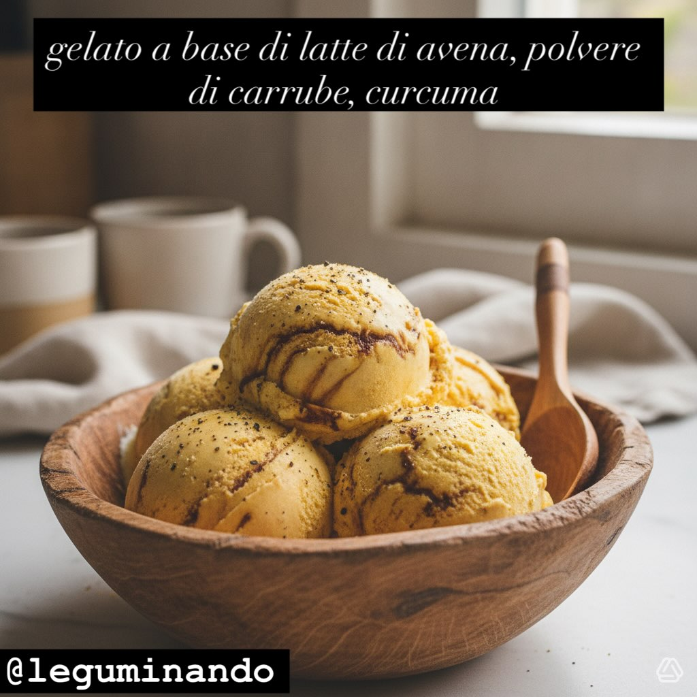

Gelato alle Carrube e Curcuma
Un gelato vegetale goloso e originale: latte di avena, polvere di carrube e un tocco di curcuma dorata. Cremoso anche senza gelatiera.
Ingredienti
- 500 ml latte di avena
- 50 g polvere di carrube
- 1 cucchiaino di curcuma
- Un pizzico di pepe macinato
- 100 g zucchero di canna (opzionale, per dolcezza extra)
- 1 cucchiaino di estratto di vaniglia (opzionale)
👨🍳 Preparazione
- Preparazione della base: versa il latte di avena in una casseruola e scaldalo a fuoco medio senza farlo bollire. Aggiungi lo zucchero di canna (se usato) e mescola finché non si scioglie completamente.
- Aggiunta degli aromi: incorpora la polvere di carrube, la curcuma e un pizzico di pepe macinato. Se desideri una nota aromatica in più, aggiungi l'estratto di vaniglia. Mescola bene fino a ottenere una miscela omogenea.
- Raffreddamento: lascia raffreddare il composto a temperatura ambiente. Una volta freddo, coprilo e mettilo in frigorifero per almeno 2 ore, finché sarà ben refrigerato.
- Congelamento: versa il composto nella gelatiera e manteca seguendo le istruzioni del produttore. Senza gelatiera: versa in un contenitore da congelatore e mescola ogni 30 minuti per 3-4 ore, rompendo i cristalli di ghiaccio fino a ottenere una consistenza cremosa.
Carob and Turmeric Ice Cream
A delicious, original plant-based ice cream: oat milk, carob powder and a touch of golden turmeric. Creamy even without an ice cream maker.
Ingredients
- 500 ml oat milk
- 50 g carob powder
- 1 teaspoon turmeric
- A pinch of ground pepper
- 100 g cane sugar (optional, for extra sweetness)
- 1 teaspoon vanilla extract (optional)
👨🍳 Preparation
- Prepare the base: pour the oat milk into a saucepan and warm it over medium heat without boiling. Add the cane sugar (if using) and stir until completely dissolved.
- Add the flavourings: stir in the carob powder, turmeric and a pinch of ground pepper. For an extra aromatic note, add the vanilla extract. Mix well until you have a smooth, even mixture.
- Cooling: let the mixture cool to room temperature. Once cold, cover and refrigerate for at least 2 hours until well chilled.
- Freezing: pour the mixture into an ice cream maker and churn following the manufacturer's instructions. Without a machine: pour into a freezer-safe container and stir every 30 minutes for 3-4 hours, breaking the ice crystals until creamy.
Helado de Algarroba y Cúrcuma
Un helado vegetal delicioso y original: leche de avena, harina de algarroba y un toque de cúrcuma dorada. Cremoso incluso sin heladera.
Ingredientes
- 500 ml leche de avena
- 50 g harina de algarroba
- 1 cucharadita de cúrcuma
- Una pizca de pimienta molida
- 100 g azúcar de caña (opcional, para mayor dulzor)
- 1 cucharadita de extracto de vainilla (opcional)
👨🍳 Preparación
- Preparar la base: vierte la leche de avena en un cazo y caliéntala a fuego medio sin que hierva. Añade el azúcar de caña (si lo usas) y remueve hasta disolverlo por completo.
- Añadir los aromas: incorpora la harina de algarroba, la cúrcuma y una pizca de pimienta molida. Si deseas una nota aromática extra, añade el extracto de vainilla. Mezcla bien hasta obtener una mezcla homogénea.
- Enfriado: deja enfriar la mezcla a temperatura ambiente. Una vez fría, cúbrela y métela en la nevera al menos 2 horas, hasta que esté bien refrigerada.
- Congelación: vierte la mezcla en la heladera y manteca siguiendo las instrucciones del fabricante. Sin heladera: vierte en un recipiente apto para congelador y remueve cada 30 minutos durante 3-4 horas, rompiendo los cristales de hielo hasta lograr una textura cremosa.
Gelado de Alfarroba e Curcuma
Um gelado vegetal delicioso e original: leite de aveia, farinha de alfarroba e um toque de curcuma dourada. Cremoso mesmo sem sorveteira.
Ingredientes
- 500 ml leite de aveia
- 50 g farinha de alfarroba
- 1 colher de chá de curcuma
- Uma pitada de pimenta moída
- 100 g açúcar de cana (opcional, para doçura extra)
- 1 colher de chá de extracto de baunilha (opcional)
👨🍳 Preparação
- Preparar a base: deita o leite de aveia num tacho e aquece em lume médio sem ferver. Adiciona o açúcar de cana (se usado) e mexe até dissolver completamente.
- Adicionar os aromas: incorpora a farinha de alfarroba, a curcuma e uma pitada de pimenta moída. Para uma nota aromática extra, adiciona o extracto de baunilha. Mistura bem até obter uma mistura homogénea.
- Arrefecimento: deixa arrefecer a mistura à temperatura ambiente. Uma vez fria, tapa e leva ao frigorífico pelo menos 2 horas, até estar bem refrigerada.
- Congelamento: deita a mistura na sorveteira e mantém segundo as instruções do fabricante. Sem máquina: deita num recipiente apto para congelador e mexe a cada 30 minutos durante 3-4 horas, partindo os cristais de gelo até obter uma consistência cremosa.
Johannisbrot-Kurkuma-Eis
Ein köstliches, originelles pflanzliches Eis: Hafermilch, Johannisbrotpulver und ein Hauch goldener Kurkuma. Cremig auch ohne Eismaschine.
Zutaten
- 500 ml Hafermilch
- 50 g Johannisbrotpulver
- 1 Teelöffel Kurkuma
- Eine Prise gemahlener Pfeffer
- 100 g Rohrzucker (optional, für extra Süße)
- 1 Teelöffel Vanilleextrakt (optional)
👨🍳 Zubereitung
- Grundlage zubereiten: Hafermilch in einem Topf bei mittlerer Hitze erwärmen, ohne kochen zu lassen. Rohrzucker zugeben (wenn verwendet) und rühren, bis er vollständig aufgelöst ist.
- Aromen zugeben: Johannisbrotpulver, Kurkuma und eine Prise gemahlenen Pfeffer einrühren. Für eine zusätzliche aromatische Note Vanilleextrakt zugeben. Gut rühren, bis eine homogene Mischung entsteht.
- Abkühlen: Die Mischung bei Zimmertemperatur abkühlen lassen. Dann abdecken und mindestens 2 Stunden in den Kühlschrank stellen, bis sie gut durchgekühlt ist.
- Einfrieren: Mischung in die Eismaschine geben und nach Herstellerangaben rühren. Ohne Maschine: in einen gefrierfesten Behälter geben und 3-4 Stunden alle 30 Minuten umrühren, dabei die Eiskristalle zerkleinern, bis eine cremige Konsistenz entsteht.
Παγωτό Χαρουπαλεύρου και Κουρκουμά
Ένα νόστιμο, πρωτότυπο φυτικό παγωτό: γάλα βρώμης, χαρουπάλευρο και μια νότα χρυσού κουρκουμά. Κρεμώδες ακόμα και χωρίς παγωτομηχανή.
Συστατικά
- 500 ml γάλα βρώμης
- 50 g χαρουπάλευρο
- 1 κουταλάκι γλυκού κουρκουμάς
- Μια πρέζα τριμμένο πιπέρι
- 100 g ζάχαρη από ζαχαροκάλαμο (προαιρετικά, για extra γλυκύτητα)
- 1 κουταλάκι γλυκού εκχύλισμα βανίλιας (προαιρετικά)
👨🍳 Εκτέλεση
- Προετοιμασία βάσης: ρίξτε το γάλα βρώμης σε κατσαρολάκι και ζεστάνετέ το σε μέτρια φωτιά χωρίς να βράσει. Προσθέστε τη ζάχαρη (αν τη χρησιμοποιείτε) και ανακατέψτε μέχρι να διαλυθεί τελείως.
- Προσθήκη αρωμάτων: ενσωματώστε το χαρουπάλευρο, τον κουρκουμά και μια πρέζα πιπέρι. Για επιπλέον άρωμα, προσθέστε το εκχύλισμα βανίλιας. Ανακατέψτε καλά μέχρι να γίνει ομοιογενές μείγμα.
- Ψύξη: αφήστε το μείγμα να κρυώσει σε θερμοκρασία δωματίου. Μόλις κρυώσει, καλύψτε το και βάλτε το στο ψυγείο για τουλάχιστον 2 ώρες, μέχρι να είναι καλά παγωμένο.
- Πήξη: ρίξτε το μείγμα σε παγωτομηχανή και ανακατέψτε σύμφωνα με τις οδηγίες του κατασκευαστή. Χωρίς μηχανή: ρίξτε σε κατάλληλο δοχείο κατάψυξης και ανακατεύετε κάθε 30 λεπτά για 3-4 ώρες, σπάζοντας τους κρυστάλλους πάγου μέχρι να γίνει κρεμώδες.